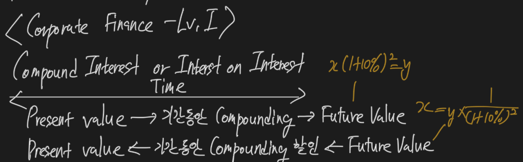

Corporate Finance
Time value of Money

- PV는 time=0 시점의 가치, Future value를 compounding 할인한 가치
Rate Type

- Required Rate of Return (요구수익률) - 위험도가 높을수록 높음
- Discount Rate (할인율) - 위험도가 높을수록 높음
- Opportunity Cost
Risk free & Risk

- Real Risk Free Rate = Inflation이 없다고 가정한 Risk Free Rate
- Nominal Risk Free Rate = Inflation이 반영된 Risk Free Rate
- Nominal RF = Real RF + Inflation
- 미국 국채가 아닌 이상 추가 risk 반영 필요
- Default Risk
- Liquidity Risk
- Maturity Risk - 장기채일수록 volatility가 올라감
Effective Annual Rate


- EAR = (1 + periodic rate)^rn - 1
- periodic 구간이 많을수록 EAR 증가
Time value calculation template

- 이거 5개를 적어놓고, 물어본 걸 풀어보면 된다.
PV & FV


- 계산기에서 투자된 금액인 PV는 마이너스로 입력해야 함
- Single Investment FV - I/Y, N, PV로 결정
- Single Investment PV - I/Y, N, FV로 결정
- Annuities
- Ordinary Annuities(기말지급), Annuities due(기초지급)로 구분
- 같은 조건이라면 항상 Annuities due가 한 기간 이자율만큼 Ordinary Annuities보다 가치가 큼
- Annuities due를 구하려면 Ordinary Annuities를 구하고 거기에 한 기간 더 곱해주면 됨
Uneven Cash Flow

- 개별 cash flow에 할인율 기간에 따라서 다 곱해주면서 PV, FV 구해줘야 함
Time-Line

Tips

Funding a Future Obligation

Capital Budgeting Process

- Firm의 project에 관련한 의사결정
- Idea → Analysis → Capital Budgeting → Monitoring, Post Audit
- 크고 작은 project 관련 의사결정을 하기 위함
Basic Principle


- CF가 반드시 Accounting Income보다 커야 함
- Incremental CF가 중요
- Sunk Cost는 의사결정에 영향을 주면 안 됨
- Externality는 같은 firm이나 다른 Firm의 의사결정이 나에게 영향을 주는 상황을 의미함
- Cannibalization
- Conventional CF
- 투자 → 회수 → 재투자 사이클이 이루어지는 전통적인, 예상가능한 CF
- Unconventional CF
- 예상 불가능하거나 들쭉날쭉하는 방식의 CF
- CF는 Opportunity Cost를 반드시 고려해야 함
- CF는 Timing이 중요
- 세후 CF로 분석
- Financing Cost는 할인율에 이미 반영되어 있음
- Project 가치 = 주주가치 + 채권자가치
- Project 자체를 추정하기 때문에, Financing cost를 고려하지 않아도 됨
Selection

- Independent
- 수익성이 좋으면 모두 선택 가능
- Mutually Exclusive
- 상호 배타적이라 하나를 선택하면 하나를 선택하지 못함
- Project Sequencing
- 시작한 project가 수익성이 좋으면 후속 project가 등장
- 반대의 경우 종료됨
- Unlimited vs. Capital Rationing
- 무제한으로 돈이 없으니 자본을 할당해서 project를 선정
NPV, IRR

- NPV
- PV의 합
- Discount Rate가 사용됨
- 0보다 높아야 가치가 있음
- 현재의 투자 vs 미래의 수익 개념
- 계산기 NPV 활용
- IRR (내부수익률)
- NPV를 0으로 만드는 할인율
- project 자체의 수익률을 의미
- Huddle Rate보다 높으면 의사결정
Pay-back period, Discounted Pay-back period, Probability Index

- Pay-back period
- 투자 원금 회수 기간
- 시간가치를 고려하지 않음
- 원금회수 이후 현금흐름을 고려하지 않음
- 수익성 지표로만 활용할 것
- Discounted Pay-back period
- 시간가치를 고려한 투자회수기간
- 원금회수 이후 고려하지 않음
- 수익성 지표로만 활용할 것
- Probability Index
- 1 + NPV / CF0
- 1보다 크면 accept, 1보다 작으면 reject
NPV Profile

- 각기 다른 Discount Rate에 따른 각각의 NPV를 그래프에 표시
- NPV
- Firm의 value 증가가 가능한지 바로 측정 됨
- Project size를 고려하지 않음
- IRR
- 수익성을 바로 보여줌
- NPV와 결과가 다를 수 있음
- Multiple IRR or No IRR 문제가 생길 수 있음 (현금흐름이 꼬일 때)
NPV vs. IRR

- 재투자를 가정했을 때 NPV는 할인율, IRR은 project의 수익률
- NPV가 현실적이고 보수적이기 때문에, NPV와 IRR의 결과가 다를 때는 NPV를 선택
Relation

WACC
- Weighted Average Cost of Capital, Marginal Cost of Capital
- Capital budgeting
- 할인율 필요 → WACC를 할인율로 사용
- The capital budgeting process involves discounted cash flow analysis. To conduct such analysis, you must know the firm’s project discount rate.
- The discount rate is the firm’s weighted average cost of capital (WACC) and is also referred to as the marginal cost of capital (MCC).
- B/S의 대변 → Firm’s Financing Source
- Cost of Debt
- 이자비용의 절세효과를 고려해서 세율을 곱해줘야 함
- Cost of Debt after Tax
- In many countries, the interest paid on corporate debt is tax deductible. Because we are interested in the after-tax cost of capital, we adjust the cost of debt for the firm’s marginal tax rate.
- Cost of Preferred Stock
- Cost of Common Stock
- WACC = Cost of Financing Firm Asset
- 기회비용을 의미하기도 함
- WACC가 project에 대한 판단 기준의 출발점
- The WACC, as we described it, is the cost of financing firm assets. We can view this cost as an opportunity cost.
- Basic definitions. On the right (Liability) side of a firm’s balance sheet, we have debt, preferred stock, and common equity. These are normally referred to as the capital components of the firm.
- For these reasons, any time we are considering a project that requires expenditures, comparing the return on those expenditures to the WACC is the appropriate way to determine whether undertaking that project will increase the value of the firm.
Capital Structure

- WACC 계산 시, Financing source 비중을 ’target capital structure’를 사용해야 함
- 해당 정보가 없다면 → current or industry average 사용
Capital Budgeting

- Firm capital을 많이 쓸 수록 WACC 증가
- Project는 갯수가 늘어날 수록 수익성 하락
- 둘이 만나는 곳이 optimal capital budget
- Cost < Project return이 중요
- A firm’s WACC may increase as larger amounts of capital are raised. Thus, its marginal cost of capital, the cost of raising additional capital, can increase as larger amounts are invested in new projects. This is illustrated by the upward-sloping marginal cost of capital curve.
- The intersection of the investment opportunity schedule with the marginal cost of capital curve identifies the amount of the optimal capital budget. The intuition here is that the firm should undertake all those projects with IRRs greater than the cost of funds, the same criterion developed in the capital budgeting topic review.
Adjustment

- project는 각기 다른 위험을 가지고 있음
- WACC는 overall risk임
- WACC는 target capital structure인데, 미래에 진짜 그렇게 자본구조가 변하는 가에 대한 문제가 있음
- 그래도 WACC를 사용함, NPV가 중요하기 때문
- There is an implicit assumption that the capital structure of the firm will remain at the target capital structure over the life of the project.
- We can still conclude that the NPVs of potential projects of firm-average risk should be calculated using the marginal cost of capital for the firm.
- 결국 project 별로 risk를 조정해야 될 필요가 있음
- To evaluate a project with greater than (the firm’s) average risk, a discount rate greater than the firm’s existing WACC should be used. Projects with below-average risk should be evaluated using a discount rate less than the firm’s WACC.
Cost of Debt

- 반드시 after-tax
- WACC의 Cost of Debt는 New Issue에 대한 YTM 개념 not current
- 이자비용 절세효과는 나라마다 다름
- Market YTM이 없으면? → Matrix pricing 활용
- Debt 자체가 특이한 속성이면 (floating interest rate) → 고려해서 Cost of Debt 반영
- For firms that primarily employ floating-rate debt, the analyst should estimate the longer-term cost of the firm’s debt using the current yield curve (term structure) for debt of the appropriate rating category.
Cost of Preferred Stock

Cost of Common Stock

- The opportunity cost of equity capital is the required rate of return on the firm’s common stock.
- Capital Asset Pricing model approach
- The dividend discount model approach
- You have to estimate the expected growth rate, g
- Using the growth rate as projected by security analysts
- Using the following equation to estimate a firm’s sustainable growth rate
- You have to estimate the expected growth rate, g
- Bond yield plus risk premium approach
Project Beta

- Beta는 민감도
- Firm말고 project에 맞게 beta 수정
- A project beta is a measure of its systematic or market risk.
- Because a specific project is not represented by a public traded security, we typically cannot estimate a project’s beta directly.
- Pure play method
- One process that can be used is based on the equity beta of a publicly traded firm that is engaged in a business similar to, and with risk similar to, the project under consideration. This is referred to as the pure-play method.
- 유사회사 (상장사)의 beta 활용
- 그냥 갖다 쓰는 것
- 하마다 모형
- The beta of a firm is a function not only of the business risks of its project (lines of business) but also of its financial structure.
- For this reason, we must adjust the pure-play beta from a comparable company (or group of companies) for the company’s leverage (unlever it) and then adjust it (re-lever it) based on the financial structure of the company evaluating the project.
- peer beta (영업 + 재무 risk) → Asset Beta (영업 risk) → project Beta (영업 + 우리 회사 재무 risk)
- 무부채 기업으로 가면 beta는 down
- beta에 관한 주요 이슈
- Beta는 과거 데이터
- peer 선정 문제 - outlier
- beta는 1로 회귀하는 특성이 있음
- Betas are believed to revert toward 1 over time, and the estimate may need to be adjusted for this tendency.
- 우리가 small firm이면 잘 안 맞을 수 있음
- Estimates of beta for small-capitalization firms may need to be adjusted upward to reflect risk inherent in small firms that is not captured by the usual estimation methods.
Country Risk Premium

- Sovereign yield spread
- 미국채와 수익률 차이
- 주식시장의 변동성도 고려 필요
- CRP = sovereign yield spread * (해당시장 주식 변동성 / 해당시장 국채 변동성)
- Cost of capital = risk free rate + beta * (return of market - risk free rate + country risk premium)
- Using the CAPM to estimate the cost of equity is problematic in developing countries because beta does not adequately capture country risk.
- To reflect the increased risk associated with investing in a developing country, a country risk premium is added to the market risk premium when using the CAPM.
- The general risk of the developing country is reflected in its sovereign yield spread.
Break Point

- more capital raised → more financial cost (WACC up)
- 목표 자본구조로 조달해야 함 → 그렇지 않으면 시장 우려 증가 → 비용 증가
- Break point = 추가로 자금조달 비용이 증가하는 시점 = 비용이 바뀔 때 추가자금 / 목표자본구조 상 비중
- The marginal cost of capital (MCC) is the cost of raising an additional dollar of capital. As a firm raised more and more capital, the costs of a firm’s sources of financing can increase.
- The marginal cost of capital can also be increased when capital is not raised in proportions that exactly match the target capital weights.
- The marginal cost of capital schedule shows the WACC for different amounts of financing.
- Break points occur any time the cost of one of the components of the company’s WACC changes.
- Break point = amount of capital at which the component’s cost of capital changes / weight of the component in the capital structure
Flotation Cost

- 추가 Equity 조달 시 들어가는 수수료 → 무시할 정도가 아님
- WACC 비용 계산에 넣으면 잘못된 계산
- 1회성 비용이기 때문에 초기투자비용에 반영
- Flotation costs are the fees charged by investment bankers when a company raises external equity capital. Flotation costs can be substantial and often amount to between 2% and 7% of the total amount of equity capital raised, depending on the type of offering.
- Therefore, the correct way to account for flotation costs is to adjust the initial project cost.
Classify Risk
Define and explain leverage, business risk, sales risk, operating risk, and financial risk and classify a risk.


Leverage
- Firm의 Fixed cost의 크기
- Leverage가 올라가면 이익의 변동성이 높아짐
- business risk = sales risk + operating risk
- financial risk
- debt financing에서 비롯됨
- Financial risk refers to the additional risk that the firm’s common stockholders must bear when a firm uses fixed cost (debt) financing.
Degree of Operating Leverage (DOL)
- DOL = (sales - TVC) / (sales - TVC - FC)
- 영업이익 중 고정비가 얼마나 차지하는 지에 대한 비율
- DOL이 높으면 매출이 성장하면 이익도 크게 성장
Degree of Financial Leverage (DFL)
- DFL = EBIT / (EBIT - interest)
- DFL이 높으면 영업이익이 높아질 수록 당기순이익도 크게 높아짐
- DOL, DFL 모두 고정비의 비중에 대한 지표
Degree of Total Leverage
- DTL = DOL * DFL = (sales - TVC) / (sales - TVC - FC - Interest)
Financial Leverage
Analyze the effect of financial leverage on a company’s net income and return on equity.

- 높을 수록 risk and return은 올라감
- 변동성이 높아짐
- ROE는 성공하면 쭉 올라감
- The use of financial leverage significantly increases the risk and potential reward to common stockholders.
Breakeven
Calculate the breakeven quantity of sales and determine the company’s net income at various sales levels.
Calculate and interpret the operating breakeven quantity of sales.

- 손익분기점
- Contribution margin = sales - variable cost
- Breakeven = total fixed cost / 1개당 contribution margin
- Total fixed cost = fixed operating cost + fixed financial cost
- The level of sales that a firm must generate to cover all of its fixed and variable costs is called the breakeven quantity.
- The breakeven quantity of sales is the quantity of sales for which revenues equal total costs, so that net income is zero.
- Operating breakeven = fixed operating cost / 1개당 contribution margin
Liquidity
Describe primary and secondary sources of liquidity and factors that influence a company’s liquidity position.

- primary source - operation에서 비롯되는 cash
- A company’s primary sources of liquidity are the sources of cash it uses in its normal day-to-day operations.
- Secondary source - 재무구조 요인에서 비롯되는 cash
- Secondary sources of liquidity include liquidating short-term or long-lived assets, negotiating debt agreements, or filing for bankruptcy and reorganizing the company.
- While using its primary sources of liquidity is unlikely to change the company’s normal operations, resorting to secondary sources of liquidity such as these can change the company’s financial structure and operations significantly and may indicate that its financial position is deteriorating.
- Drags on liquidity - cash inflow가 느려짐
- 내가 liquidity를 긁어와야 하는 개념 (inflow가 느려졌으니 당겨야 함)
- Pulls on liquidity - cash outflow가 빨라짐
- 상대방이 내 liquidity를 당기는 개념 (outflow가 빨라짐)
Measures
Compare a company’s liquidity measures with those of peer companies.


- BS와 IS를 사용하는데, 둘의 concept가 달라서 보정을 해야 함
- IS는 flow concept
- BS는 stock concept
- BS 수치를 연 평균 수치로 사용함으로써 flow concept로 고쳐줌
- Current ratio = current assets / current liabilities
- Quick ratio = (cash + short-term securities + account receivable) / Current liabilities
- Receivable turnover = credit sales / average of account receivable
- 산업 평균이 바람직
- number of days Account receivable = 365 / Account receivable turnover
- Inventory turnover = cost of goods for sales / average of inventory
- number of days inventory = 365 / inventory turnover
- Payable turnover = Purchase / average of account payable
- number of days account payable = 365 / account payable turnover
Operating cycle
Evaluate working capital effectiveness of a company based on its operating and cash conversion cycles and compare the company’s effectiveness with that of peer companies.

- Operating cycle = days of inventory + days of account receivable
- Cash conversion cycle = average days of (account receivable + inventory - account payable)
- 너무 높은 cash conversion cycle은 좋지 않음
- High cash conversion cycle are considered undesirable. A conversion cycle that is too high implies that the company has an excessive amount of investment in working capital.
Cashflow Type

- Daily cash position
- 정상 영업을 위한 cash 수준
- 단, 중, 장기로 cash needs를 예측해서 managing
- Daily cash position refers to uninvested cash balances a firm has available to make routine purchases and pay expenses as they come due. The purpose of managing a firm’s daily cash position is to have sufficient cash on hand (that is, make sure the firm’s net daily cash position never becomes negative) but to avoid keeping excess cash because of the interest income forgone by not investing the cash.
- Typical cash inflows for a firm include its cash from sales and collections of receivables.
- To manage its cash position effectively, a firm should analyze its typical cash inflows and outflows by category and prepare forecasts over short-term, medium-term, and long-term time horizons. A firm can use these forecasts to identify periods when its cash balance may become low enough to require short-term borrowing, or high enough to invest excess cash in short-term securities.
Yield
Calculate and interpret comparable yield on various securities, compare portfolio returns against a standard benchmark, and evaluate a company’s short-term investment policy guidelines.

- Excess cash는 short-term security에 투자해서 market return 정도만 먹음
- U.S Treasury bills
- Short-term federal agency securities
- Bank certificates of deposit
- Banker’s acceptances
- Time deposits
- Repurchase agreements
- Commercial paper
- Money market mutual funds
- Adjustable-rate preferred stock
- % discount = (Face value - price) / Face value
- Discount basis yield = % discount * 365 / days
- days는 만기까지 남은 기간을 의미
- Money market yield = holding period return * 360 / days
- 360일임
- Bond equivalent yield = holding period return * 365 / days
- 1년 기준으로 환산하면 얼마나 discount 되는지 구하는 것
- return은 bond equivalent yield로 통일
- Returns on the firm’s short-term securities investments should be stated as bond equivalent yields.
- Cash management는 row risk, market return이 목표
- IPS로 주기적 관리 + monitoring
Working Capital Management
Evaluate a company’s management of accounts receivable, inventory, and accounts payable over time and compared to peer companies

Account Receivable management
- average days와 과거 기록 비교
- aging schedule 관리
- weighted average collection period도 관리
- Account receivable trend monitoring
- The management of accounts receivable begins with calculating the average days of receivables and comparing this ratio to the firm’s historical performance or to the average ratios for a group of comparable companies.
Inventory management
- 재고를 늘리고 줄이는건 cash와 trade-off
- 산업 평균과 비교 중요
- Inventory levels that are too low will result in lost sales due to stock-outs, while inventory that is too large will have carrying costs because the firm’s capital is tied up in inventory.
- Comparing average days of inventory and inventory turnover ratios between industries, or even between two firms that have different business strategies, can be misleading.
Account management
- 너무 일찍 vs 너무 늦게 → 둘 다 문제
- 2/10 net 60
- 10일 내에 주면 2% 할인, 아니면 60일 안에 결제
- Cost of trade credit (1 + (% discount / (1 - % discount)))^(365 / days) - 1
- Just as a company must manage its receivables because they require working capital (and therefore have a funding cost), payables must be managed well because they represent a source of working capital to the firm.
- Typical terms on payables (trade credit) contain a discount available to those who pay quickly as well as a due date.
Financing Method
Evaluate the choices of short-term funding available to a company and recommend a financing method.

From Bank
- Line of credit - 신용공여
- Lines of credit are used primarily by large, financially sound companies.
- Uncommitted line of credit
- A bank extends an offer of credit for a certain amount but may refuse to lend if circumstances change.
- Committed (regular) line of credit
- A bank extends an offer of credit that it “commits to” for some period of time.
- Revolving line of credit
- An even more reliable source of short-term financing than a committed line of credit, revolving lines of credit are typically for longer terms, sometimes as long as years.
- 담보설정가능
- Blanket lien
- which gives it a claim to all current and future firm assets as collateral in case the primary collateral is insufficient and the borrowing firm defaults.
- Blanket lien
- Banker’s acceptances - 은행인수허음
- 할인해서 은행들에게 매각
- Banker’s acceptances are used by firms that export goods. A banker’s acceptance is a guarantee form the bank of the firm that has ordered the good stating that a payment will be made upon receipt of the goods.
- Factoring refers to the actual sale of receivables at a discount from their face values.
From non-bank
- poor credit 회사가 주로 이용
- funding cost는 일반적으로 bank보다 비싼데, 신용도 좋은 기업이 Commercial Paper 발행하면 bank보다 쌈
Corporate Governance
Describe corporate governance.

- Management system, Internal control
- Insider vs. external share owners를 조율하는 것을 의미
- Shareholder theory vs. Stakeholder theory
- 주주우선주의 vs. 이해관계자우선주의
- Under shareholder theory, the primary focus of a system of corporate governance is the interests of the firm’s shareholders, which are taken to be the maximization of the market value of the firm’s common equity.
- The focus of corporate governance under stakeholder theory is broader; it considers conflicts among the several groups that have an interest in the activities and performance of the firm. These groups include shareholders, employees, suppliers, and customers, among others.
- the system of internal controls and procedures by which individual companies are managed.
- to minimize and manage the conflicting interests between insiders and external shareowners.
Stakeholder
Describe a company’s stakeholder groups and compare interests of stakeholder groups.

- Shareholders
- board of directors
- senior managers
- employees
- creditors
- suppliers
Conflict of interests
Describe principal-agent and other relationships in corporate governance and the conflicts that may arise in these relationship.

- The principal-agent conflict arises because an agent is hired to act in the interest of the principal, but an agent’s interests may not coincide exactly with those of the principal.
- 대리인 문제
- 원청과 대리인의 이익이 align되어있지 않아 발생
Stakeholder management
Describe stakeholder management
Describe mechanisms to manage stakeholder relationships and mitigate associated risks.

- good relationship을 유지해야 함
- legal infrastructure
- contractual infrastructure
- organizational infrastructure
- governmental infrastructure
- 회계년도가 끝난 후 주총을 개최함
- 주총 특별결의사항은 3분의 2 이상의 동의 필요
- extraordinary general meeting
- 투표 방식
- Majority voting - 우리가 아는 일반적인 주총 투표방식
- Cumulative voting - 집중투표제
- 소액주주 의견을 반영
Role
Describe functions and responsibilities of a company’s board of directors and its committees.

- 사내이사 - 주로 경영진, 보통 주주가 아님
- 사외이사 - 외부인
- 사내/사외이사 모두 주주의 이익을 위해 회사를 monitoring
- Board of Director의 의무
- 경영진 선출
- 전략결정
- 재무구조승인
- 모든 활동은 주주를 위해서
- Board of Director의 종류
- Audit, governance, risk 등 기능별로 BoD가 생길 수 있음
Market factor, Risk Relevance factor
Describe market and non-market factors that can affect stakeholder relationships and corporate governance.
Identify potential risks of poor corporate governance and stakeholder management and identify benefits from effective corporate governance and stakeholder management.
Describe factors relevant to the analysis of corporate governance and stakeholder management.

- active shareholder - 행동주의 투자자
- M&A 같은 중요 상황
- proxy fight 발생
- tender offer - 매수 오퍼가 있기도 함
- Corporate governance - 작동 못하면 주주가치와 value가 하락
- CFA에서 만능 키
- Governance는 trend
- 다양한 제도를 도입함
- Voting structure, Board of Director, Management Incentive
ESG
Describe environmental and social considerations in investment analysis.
Describe how environmental, social, and governance factors may be used in investment analysis.

- Environmental social governance
- sustainable or responsible or socially responsible investing
- negative screening - 투자하지 말아야 할 대상 선정
- positive screening - 투자해야 할 대상 선정